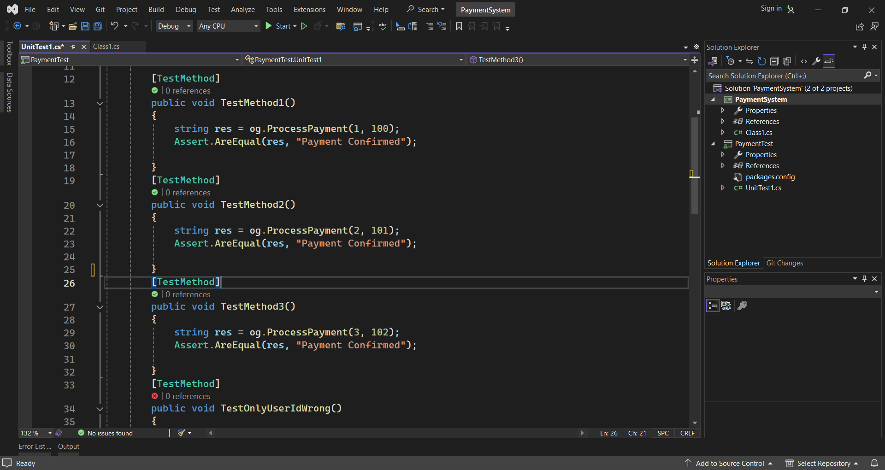
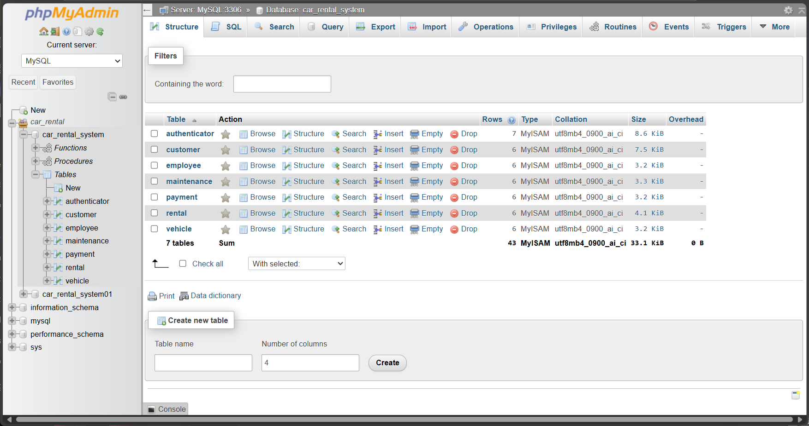
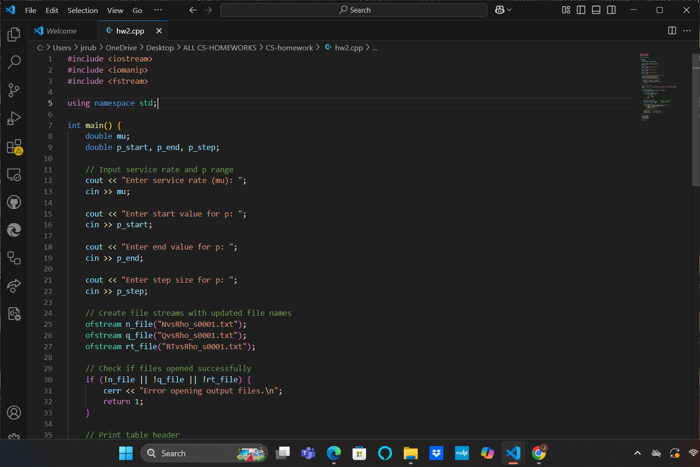

Welcome to my personal project showcase
This is a responsive website I created to show how technology can help improve farming. It has different sections and a simple design to make it easy to use.
I made this project during my second year at university as one of my first web development projects.
Note: I'm still learning and improving my skills in JavaScript.
View it here: Smart Agriculture Website
During my studies, I developed desktop applications using C# in Visual Studio. These projects helped me understand the basics of Windows Forms, event-driven programming, and user interface design. The applications include:
I also practiced testing principles using Microsoft tools integrated in Visual Studio. I performed:
These tests were implemented in class libraries using the .NET Framework. I used Visual Studio’s built-in testing features to validate and maintain code quality throughout the development process.
I have built and managed relational databases using MySQL. In these projects, I designed tables, enforced relationships using primary and foreign keys, and wrote SQL queries to insert, update, and retrieve data. I also connected the databases to web applications using PHP to perform real-time data transactions.
In the Computer Simulation course, I applied structured programming concepts using C++. I created several programs, including one that generates pseudo-random numbers using methods such as the Linear Congruential Generator (LCG). These projects strengthened my understanding of logic building, control flow, and memory management in low-level programming.
I have designed different types of UML diagrams for software scenarios: